Schnellstart
LemmaLoom ist eine macOS-Anwendung für die qualitative Analyse und die Grammatikanalyse von Texten. Sie können damit Textstellen in Dokumenten kodieren und diese Codes im Abgleich mit der Grammatik des Dokuments untersuchen. Natürlich können Sie LemmaLoom auch nur als Werkzeug zum Kodieren oder nur als Werkzeug für die Grammatikanalyse verwenden. Wenn Sie qualitative Analyse und Grammatikanalyse jedoch verbinden, können Sie Ihren Dokumenten Fragen stellen, die sich sonst mit Werkzeugen für die qualitative Datenanalyse ohne Grammatikbezug schwerer stellen ließen.
Zu LemmaLoom gehört ein Beispielprojekt namens „Klimadebatte“, das Sie importieren können, um die verschiedenen Werkzeuge und Funktionen der Anwendung kennenzulernen. Ein großer Teil dieses Handbuchs und der gesamte Schnellstart nutzen das Projekt „Klimadebatte“ als thematischen Rahmen für Beispiele und Erklärungen. Das Projekt „Klimadebatte“ besteht aus erfundenen Meinungsbeiträgen, Kolumnen, einer Rede und anderen Medien, etwa einem Bericht und einer aufgezeichneten Radiodebatte. Ähnlichkeiten mit realen Personen oder Publikationen sind zufällig. Da die Inhalte erfunden sind, geben sie keinerlei Meinungen wieder und sollen in keiner Weise überzeugen.
In diesem Kapitel beginnen Sie, „Klimadebatte“ von Grund auf selbst aufzubauen. Sie beginnen mit elf erfundenen Texten verschiedener Art (Meinungsbeiträge, eine Rede, Blogbeiträge und Kolumnen). Sechs davon stammen von Klimaaktivisten, fünf von Klimaskeptikern. Die Abbildungen in diesem Handbuch zeigen das fertige Projekt. Um dem Handbuch Schritt für Schritt zu folgen, importieren Sie das Beispielprojekt über Ablage ▸ Importieren ▸ Beispielprojekt. Beim Import richtet sich die Sprache des Beispielprojekts nach der Sprache der Benutzeroberfläche, die Sie in LemmaLoom verwenden. Das kann Englisch, Deutsch oder vereinfachtes Chinesisch (Festland) sein. Näheres dazu finden Sie unter Unterstützte Sprachen in Kapitel 1, Einführung. Im Beispielprojekt sind das Attribut, die Sets und die Codes aus den ersten Schritten bereits angelegt. Wenn Sie mit dem Beispielprojekt arbeiten, springen Sie deshalb gleich zu Mit einer Lens lesen. Überspringen Sie Codes anlegen, wenn Sie diesen Abschnitt erreichen.
Sie können für dieses Handbuch stattdessen auch eigene Texte importieren. Welche Arten von Dateien Sie importieren können, erfahren Sie im Einzelnen in Kapitel 4, Material importieren. Wo die Anleitung bestimmte Dokumente, Haltungen oder Textstellen aus „Klimadebatte“ nennt, setzen Sie bei Bedarf Ihr eigenes Material ein.
Das Hauptfenster
Wenn Sie LemmaLoom zum ersten Mal starten, sehen Sie ein Fenster mit drei Spalten. Alles über die Oberfläche erfahren Sie in Ein Rundgang durch das Hauptfenster in Kapitel 2, Erste Schritte. Zunächst ist die Seitenleiste links leer, und die Tab-Symbole des Inspektors rechts sind deaktiviert. In der mittleren Spalte stehen der Titel LemmaLoom und die Schaltflächen Neues Projekt und Beispielprojekt.
So sieht das Fenster mit einem geladenen Projekt und einem geöffneten Dokument aus:
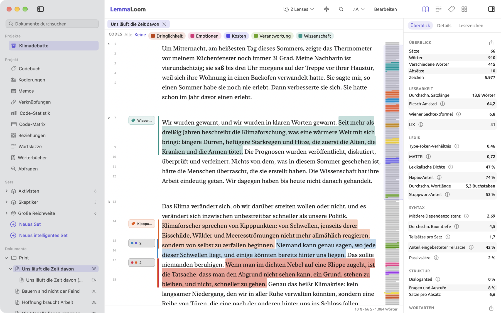
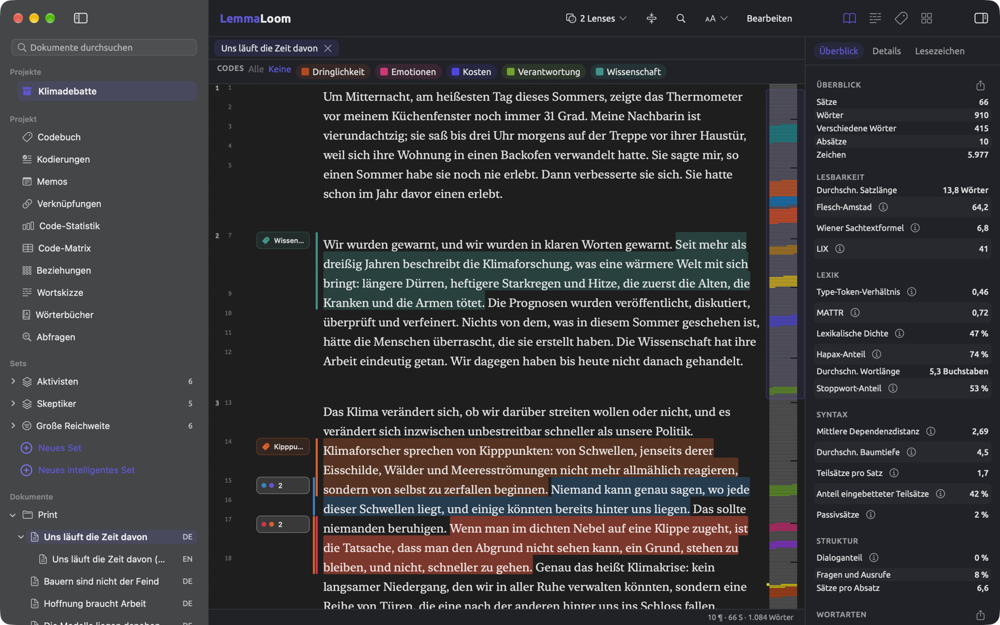
Projekte erscheinen in der Seitenleiste links. Kapitel 3, Projekte und Dokumente beschreibt den Aufbau eines Projekts genauer. Unter Projekt finden Sie in der Seitenleiste zehn Detailansichten des gesamten Projekts, etwa Codebuch, Code-Matrix und Abfragen. Weiter unten in der Seitenleiste folgen Sets, Dokumente und Tags (siehe Kapitel 8, Sets, Gruppen, Tags und Attribute). Über Bearbeiten ▸ Dokument suchen (⇧⌘F) durchsuchen Sie das aktive Projekt nach Dokumenten; Sie können den Namen des gesuchten Dokuments aber auch direkt in Dokumente durchsuchen oben in der Seitenleiste eingeben.
Dokumente und Detailansichten öffnen sich in Tabs in der Leseansicht in der Mitte des Fensters. Am oberen Rand der Leseansicht verläuft die Titelleiste mit dem Lens-Menü sowie Funktionen zum Suchen und Bearbeiten von Text und zum Anpassen der Darstellung von Text und Leseansicht. Kapitel 5, Lesen und Bearbeiten beschreibt diese Optionen und Funktionen im Einzelnen. Der Inspektor rechts zeigt Informationen zum Dokument im aktiven Tab. Er ist in vier Tabs gegliedert (Text, Grammatik, Kodierung und Multimodus), die Sie über Schaltflächen oben rechts im Inspektor erreichen. Kapitel 10, Der Text-Inspektor, Kapitel 11, Der Grammatik-Inspektor, Kapitel 13, Codes auswerten und Kapitel 14, Skizzenraum beschreiben, was diese vier Tabs anzeigen.
Eine Schaltfläche ist deaktiviert, wenn sie für das aktive Dokument oder den aktiven Tab keine Rolle spielt oder noch nicht verwendet werden kann (Lenses setzen zum Beispiel voraus, dass die Indizierung des Dokuments abgeschlossen ist). Wenn Sie den Mauszeiger auf eine deaktivierte Schaltfläche halten, sehen Sie den Grund dafür, etwa Lenses stehen zur Verfügung, sobald die Indizierung abgeschlossen ist.
Das Projekt anlegen
Alles, was zu einer Studie gehört, kommt in ein Projekt. Ein Projekt ist der oberste Behälter in LemmaLoom. Es enthält die Dokumente und die Daten, die Sie bei der Arbeit an ihnen zusammentragen. Dazu gehören Codes, Memos, Lesezeichen, Sets und Abfragen. In der Regel sollten Sie das gesamte relevante Material einer Studie in einem einzigen Projekt sammeln. Projektübergreifende Analysen sind in LemmaLoom nur eingeschränkt möglich, Abfragen lassen sich jedoch über mehrere Projekte hinweg ausführen. Projektübergreifend arbeiten in Kapitel 3, Projekte und Dokumente erklärt, wie solche Abfragen funktionieren.
Attribute halten Sachangaben zu Ihren Dokumenten fest. Ein Attribut kann zum Beispiel die Haltung des Verfassers, das Erscheinungsdatum oder der Fundort sein. Attribute können Sie beim Anlegen eines Projekts oder jederzeit später festlegen. Wie Sie mit Attributen arbeiten, erfahren Sie genauer unter Attribute in Kapitel 8, Sets, Gruppen, Tags und Attribute. Um im Projekt „Klimadebatte“ mitzuarbeiten, brauchen Sie nur das Attribut „Haltung“, um später in diesem Kapitel Aktivisten mit Skeptikern zu vergleichen.
- Wählen Sie Ablage ▸ Neues Projekt (⇧⌘N).
- Geben Sie unter Name
Klimadebatteein. - Klicken Sie unter Attribute auf Attribut hinzufügen.
- Geben Sie in der neuen Zeile
Haltungin das Namensfeld ein. - Wählen Sie im Menü daneben Auswahl. Eine Auswahl lässt nur die Werte zu, die Sie vorgeben. So bleibt die Schreibweise jedes Werts von Dokument zu Dokument gleich.
- Geben Sie in das Feld, das daraufhin erscheint,
Aktivismus, Skepsis, Neutralein. „Neutral“ ist für Dokumente gedacht, die über die Debatte berichten, ohne Partei zu ergreifen. - Klicken Sie auf Erstellen.
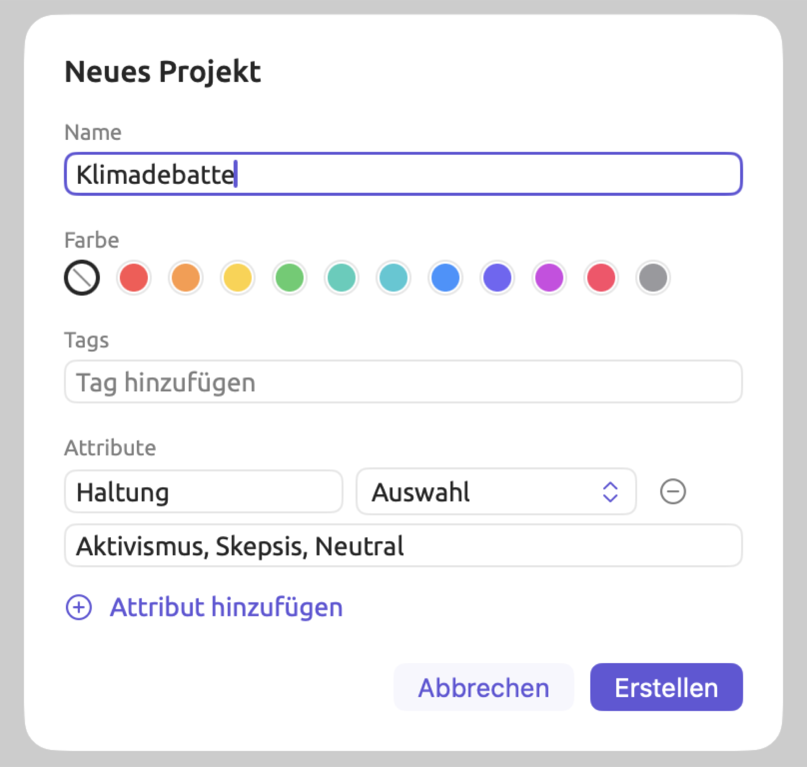
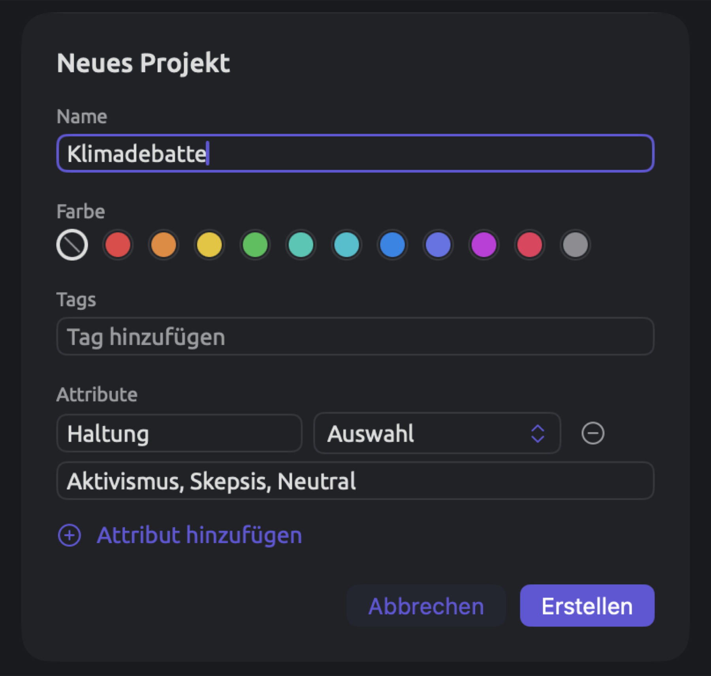
Ihr neues Projekt erscheint in der Seitenleiste unter Projekte, und sein Titel ist fett gesetzt. Ein fett gesetzter Titel kennzeichnet das aktive Projekt; alles unterhalb der Projektliste in der Seitenleiste betrifft nur das aktive Projekt.
Die Texte importieren
- Wählen Sie Ablage ▸ Importieren ▸ Dokumente (⇧⌘I).
- Wählen Sie die elf Texte aus. Um mehrere Dateien auszuwählen, halten Sie beim Klicken die Befehlstaste (⌘) gedrückt.
- Klicken Sie auf Öffnen.
- Der Dialog Dokument importieren öffnet sich für die erste Datei und zeigt oben rechts 1 von 11. Prüfen Sie den Eintrag unter Name (LemmaLoom übernimmt ihn aus dem Dateinamen), und lassen Sie die übrigen Felder unverändert.
- Klicken Sie auf Importieren.
- Der Dialog öffnet sich für jede weitere Datei erneut. Klicken Sie jedes Mal auf Importieren oder auf Überspringen, um eine Datei auszulassen.
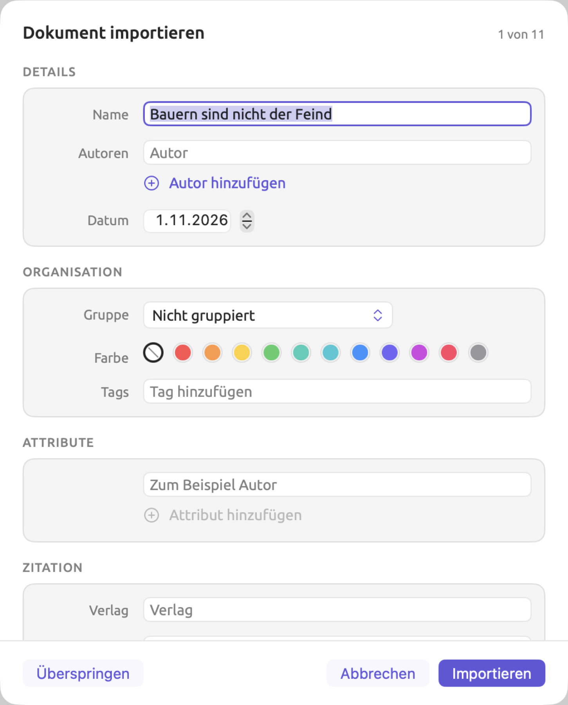
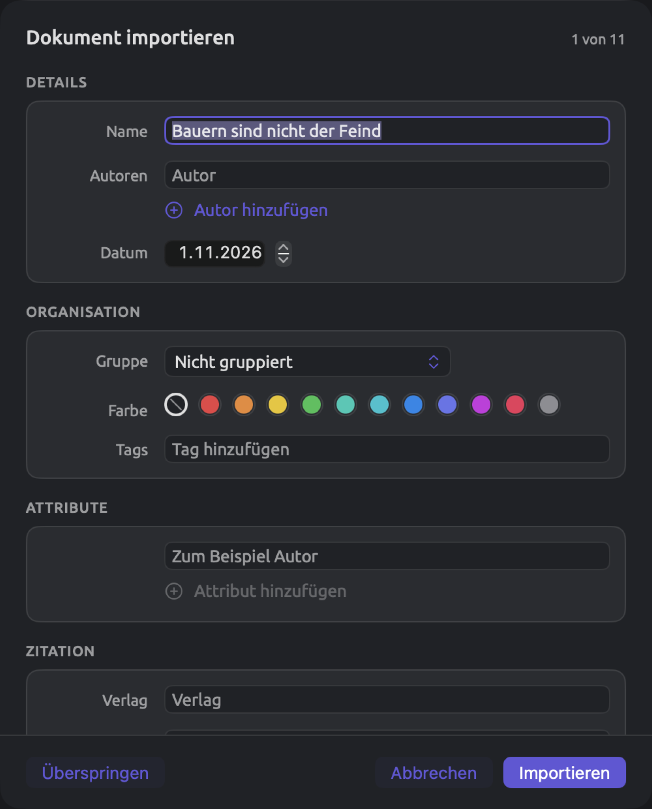
LemmaLoom listet die Texte unter Dokumente auf und beginnt, sie im Hintergrund zu indizieren. Bei der Indizierung wird jeder Text zunächst in Sätze und Wörter zerlegt. Dann erhält jedes Wort seine Grundform, wie sie im Wörterbuch steht; diese Form heißt Lemma. Außerdem ermittelt die Indizierung, welches Nomen das Objekt welches Verbs ist, und jede andere Abhängigkeit zwischen den Wörtern eines Satzes. Kapitel 21, Analyse und Indizierung beschreibt die Indizierung genauer. Damit Sie gleich beginnen können, sind alle Dokumente in „Klimadebatte“ bereits indiziert. Bei großen Dokumenten oder Mediendateien kann es länger dauern, bis sie vollständig indiziert sind. Auch die Hardware Ihres Computers beeinflusst, wie schnell Dokumente indiziert werden. LemmaLoom nutzt Hardwarebeschleunigung, wo sie verfügbar ist.
Während ein Dokument indiziert wird, ist sein Titel grau, und rechts daneben erscheint ein kleiner Fortschrittsring. Sobald der Ring verschwindet, ist das Dokument erfolgreich indiziert. Um alle Dokumente zu sehen, die gerade indiziert werden, wählen Sie Fenster ▸ Aktivität (⌥⌘0).
Im Dialog Dokument importieren können Sie für jedes Dokument Datum, Gruppen, Tags und Sprache festlegen, wie unter Der Dialog „Dokument importieren“ in Kapitel 4, Material importieren beschrieben. Dort wird auch erklärt, wie Sie PDF-Dateien, Webseiten sowie Audio- und Videoaufnahmen importieren.
Die Haltung jedes Textes eintragen
Den Wert für „Haltung“ hätten Sie auch im Dialog Dokument importieren für jedes Dokument angeben können. Bei elf Dokumenten ist es aber deutlich weniger Aufwand, den Wert im Fenster Attribute festzulegen, als jedes Dokument einzeln zu bearbeiten. Im Fenster Attribute können Sie Werte für viele Dokumente auf einmal festlegen.
- Klicken Sie unter Projekte mit der rechten Maustaste auf „Klimadebatte“ und wählen Sie Attribute, oder wählen Sie Projekt ▸ Attribute. Das Fenster listet jedes Dokument des Projekts auf.
- Aktivieren Sie die Markierungsfelder neben den sechs Texten der Aktivisten („Uns läuft die Zeit davon“, „Brief vom Klimastreik“, „Warum wir Straßen blockieren“, „Bauern sind nicht der Feind“, „Das Versprechen der Bürgermeisterin“ und „Hoffnung braucht Arbeit“).
- Die Zeile mit Suchen zeigt jetzt 6 Dokumente ausgewählt. Wählen Sie daneben Wert festlegen ▸ Haltung.
- Wählen Sie im Dialog Wert festlegen „Aktivismus“ und klicken Sie auf Anwenden.
- Deaktivieren Sie die Markierungsfelder der Aktivisten und aktivieren Sie dann die der fünf Texte der Skeptiker („Die Modelle liegen daneben“, „Netto-Null wird teuer“, „Keine Panik“, „Wer bezahlt die Wende“ und „Wissenschaft ist nie abgeschlossen“).
- Wählen Sie erneut Wert festlegen ▸ Haltung, wählen Sie „Skepsis“ und klicken Sie auf Anwenden.
- Schließen Sie das Fenster Attribute.
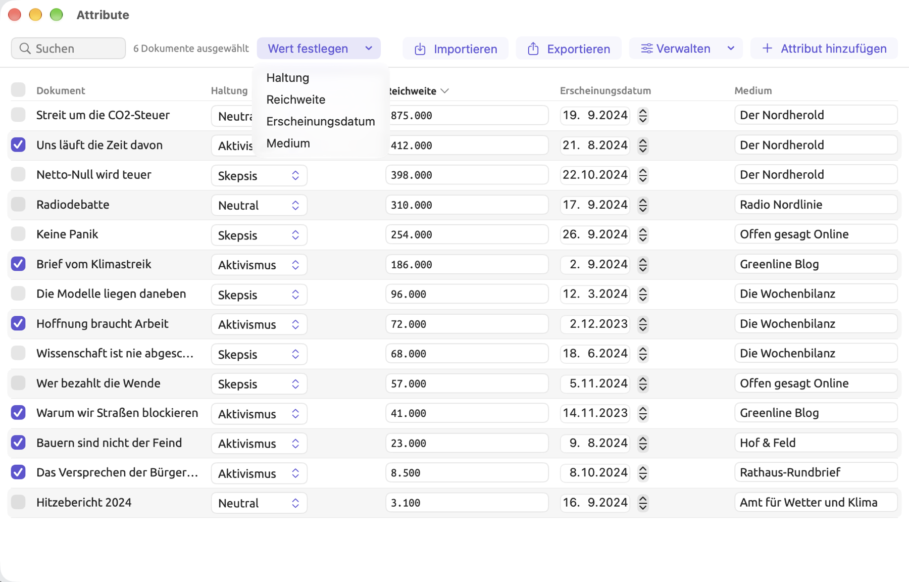
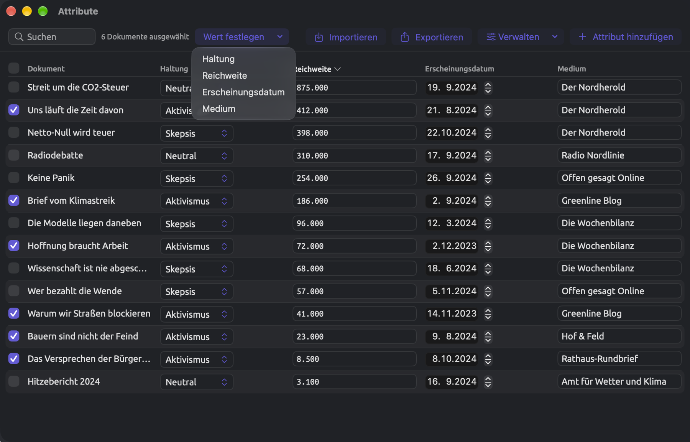
Alternativ können Sie die Werte des aktiven Dokuments unter Details im Tab Text des Inspektors ändern. So ändern Sie jeweils ein Dokument. Wenn Sie im Fenster Attribute suchen, wirkt Wert festlegen nur auf die gefundenen Zeilen. Mehr dazu finden Sie unter Einen Wert für viele Dokumente festlegen in Kapitel 8, Sets, Gruppen, Tags und Attribute.
Zwei Sets bilden
Mit der Schlüsselwortliste weiter unten in diesem Kapitel vergleichen Sie die Inhalte der Dokumente von Aktivisten mit denen von Skeptikern. Dazu braucht jede Seite ein eigenes Set, also eine Sammlung von Dokumenten unter einem Namen.
- Klicken Sie unter Dokumente auf „Uns läuft die Zeit davon“ und dann bei gedrückter Befehlstaste (⌘) auf jeden der fünf anderen Texte der Aktivisten.
- Klicken Sie mit der rechten Maustaste auf eines der ausgewählten Dokumente und wählen Sie Zu Set hinzufügen ▸ Neues Set aus Dokumenten.
- Das neue Set erscheint unter Sets, und sein Name lässt sich sofort bearbeiten. Geben Sie
Aktivistenein und drücken Sie den Zeilenschalter. - Wählen Sie die fünf Texte der Skeptiker auf dieselbe Weise aus und bilden Sie ein Set namens
Skeptiker.
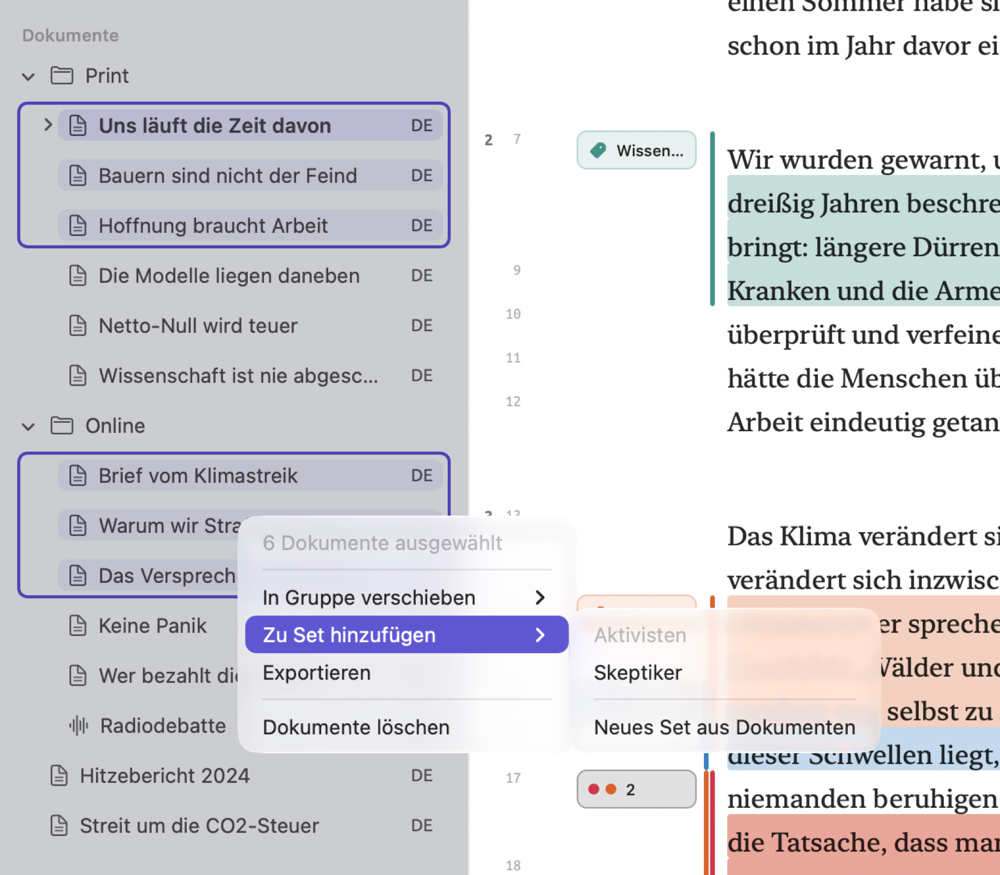
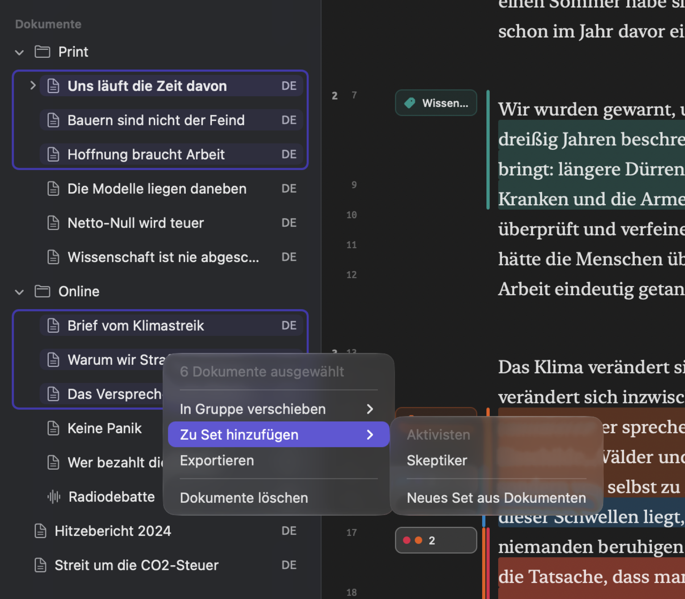
Im Beispielprojekt enthält „Große Reichweite“ alle Dokumente, deren „Reichweite“ bei mindestens 100.000 Personen liegt. Dieses Set wird durch eine Regel bestimmt und heißt daher intelligentes Set. Mehr dazu finden Sie unter Intelligente Sets in Kapitel 8, Sets, Gruppen, Tags und Attribute.
Mit einer Lens lesen
Mit einem Klick auf „Uns läuft die Zeit davon“ unter Dokumente öffnen Sie das Dokument zum Lesen. Das Beispielprojekt hat es in der Gruppe „Print“ abgelegt. Am linken Rand der Leseansicht nummerieren zwei Spalten die Absätze und Sätze Ihres Dokuments. Am rechten Rand der Leseansicht liegt die Dokumentübersicht, eine farbige Bildlaufleiste. Sie zeigt, wo Sie sich gerade im Dokument befinden und wie es sich im Hinblick auf die aktivierten Lenses (etwa Codes) zusammensetzt. Wenn Sie den Mauszeiger auf die Dokumentübersicht halten, sehen Sie außerdem eine Vorschau des Textes an der jeweiligen Stelle.
Wie der Inhalt in der Leseansicht aussieht, bestimmen die Lenses. Jede Lens gestaltet den Text nach einer bestimmten Eigenschaft. Mehr dazu finden Sie in Kapitel 6, Lenses, wo alle verfügbaren Lenses und ihre Annotationen ausführlich beschrieben sind. Wenn Sie ein Dokument zum ersten Mal ansehen, sind die Lenses Codes und Lesezeichen bereits aktiviert; deshalb steht im Lens-Menü 2 Lenses. Diese beiden Lenses stellen Ihre vorhandenen Annotationen im Text dar. So aktivieren Sie zum Beispiel eine Lens, die auf der Grammatikanalyse beruht:
- Klicken Sie in der Titelleiste auf 2 Lenses.
- Wählen Sie Modalität.
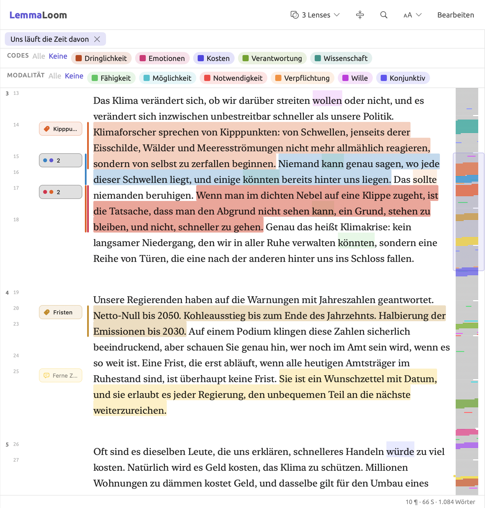
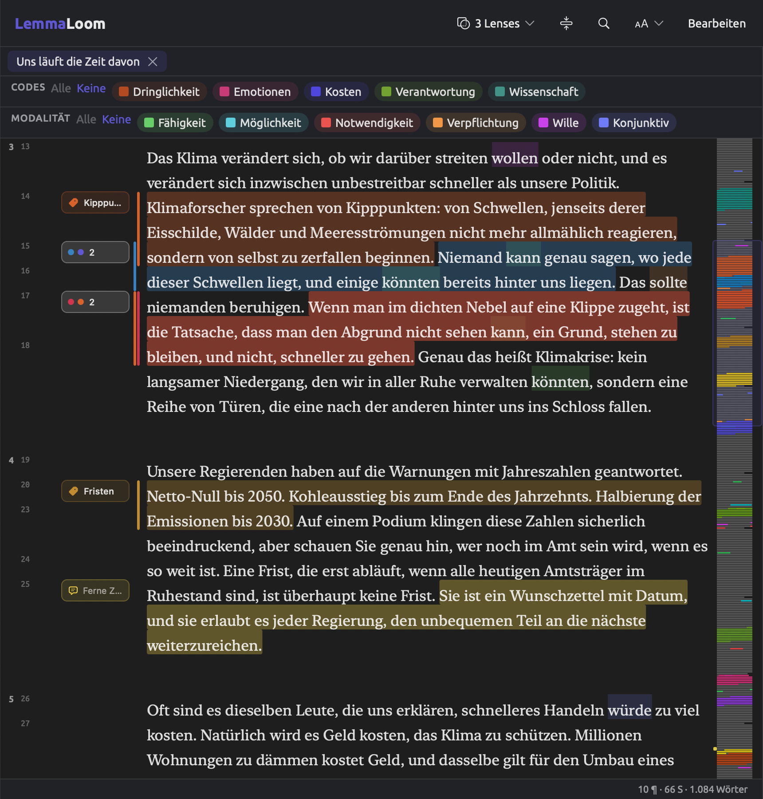
Modalität annotiert Wörter, die Fähigkeit, Notwendigkeit, Verpflichtung, Möglichkeit und Willen ausdrücken. In „Uns läuft die Zeit davon“ ist zum Beispiel würde in „schnelleres Handeln würde zu viel kosten“ mit Konjunktiv annotiert, kann in „Niemand kann genau sagen, wo jede dieser Schwellen liegt“ dagegen mit Fähigkeit. Den Konjunktiv annotiert die Lens nur in deutschen Texten. Über dem Text steht eine Reihe farbiger Aspekt-Lenslets, die die Legende der Lens bilden. Wenn Sie auf eines der Lenslets klicken, wird dieser Aspekt deaktiviert, und seine Annotationen verschwinden aus dem Dokument. Ein weiterer Klick stellt den Aspekt und seine Annotationen im Dokument wieder her.
Rechts neben dem Lens-Menü befindet sich eine Schaltfläche mit dem Tooltip Nur die Sätze anzeigen, die eine Lens annotiert. Ein Klick darauf verkürzt das Dokument auf die Sätze, die Annotationen der aktivierten Lenses enthalten; ein weiterer Klick zeigt wieder das ganze Dokument.
Codes anlegen
Textstellen zu einem Thema oder Gesichtspunkt weisen Sie einen Code zu, den Sie selbst festlegen (zum Beispiel „Dringlichkeit“). Alle Codes eines Projekts zusammen bilden sein Codebuch. Sie können sich Ihr Codebuch als eine Sammlung von Adjektiven oder Ideen vorstellen, mit denen Sie Einzelheiten in Ihrem Projekt beschreiben oder hervorheben. Ihre Codes helfen Ihnen dann, Fragen zu beantworten, die Sie an die Dokumente in Ihrem Projekt haben könnten. In der Regel beginnen Sie mit einigen Fragen, die Sie Ihren Dokumenten stellen möchten, und legen davon ausgehend die Codes an, die Ihnen beim Beantworten dieser Fragen voraussichtlich helfen.
Mit den folgenden Schritten legen Sie einen Code namens „Dringlichkeit“ und seinen Untercode „Fristen“ an.
- Klicken Sie in der Seitenleiste unter Projekt auf Codebuch. Es öffnet sich in einem Tab.
- Klicken Sie unten in der Liste der Codes auf Code hinzufügen.
- Geben Sie im Dialog Neuer Code unter Name
Dringlichkeitein. - Klicken Sie unter Farbe auf eine Farbe.
- Klicken Sie auf Sichern.
- Klicken Sie in der Liste mit der rechten Maustaste auf „Dringlichkeit“ und wählen Sie Untercode hinzufügen.
- Geben Sie im Dialog Neuer Code unter Name
Fristenein, wählen Sie eine Farbe und klicken Sie auf Sichern.


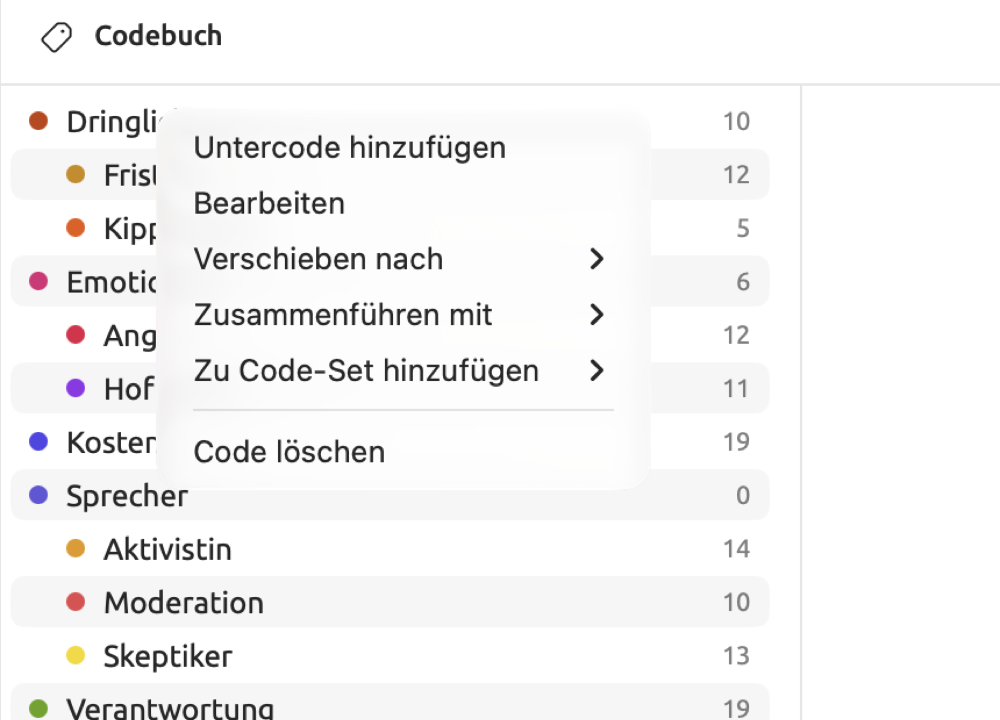
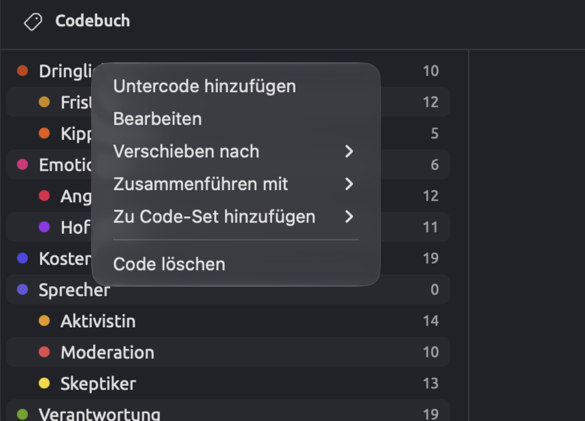
Mit Untercodes bauen Sie Hierarchien aus verwandten Codes auf. Das kann hilfreich sein, wenn Ihre Studie viele ähnliche Codes enthält, die Sie logisch zusammenfassen möchten.
Textstellen kodieren
- Klicken Sie auf den Tab von „Uns läuft die Zeit davon“.
- Wählen Sie eine Textstelle aus, zum Beispiel „Eine Frist, die erst abläuft, wenn alle heutigen Amtsträger im Ruhestand sind, ist überhaupt keine Frist.“
- Klicken Sie in der Leiste, die unten in der Leseansicht erscheint, auf Code.
- Klicken Sie in der Liste der Codes auf „Fristen“.
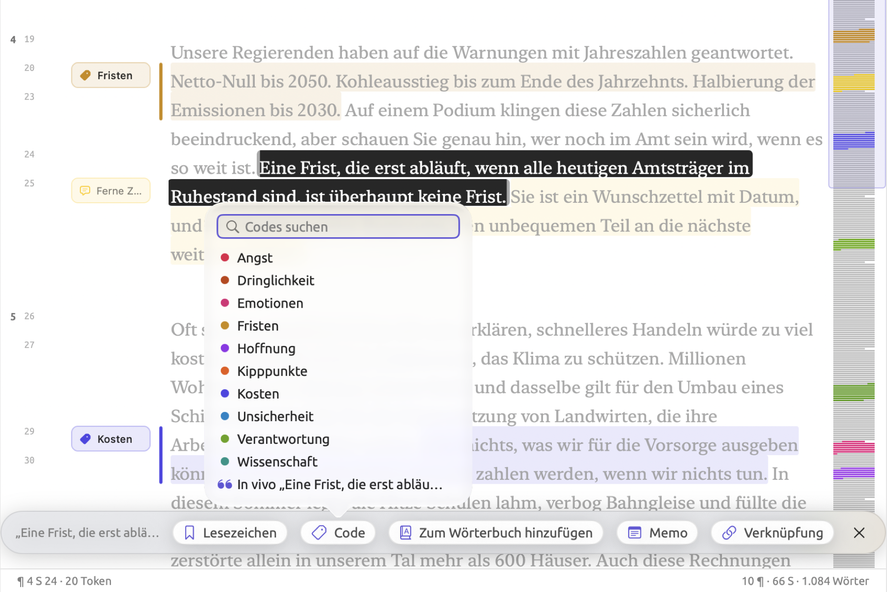
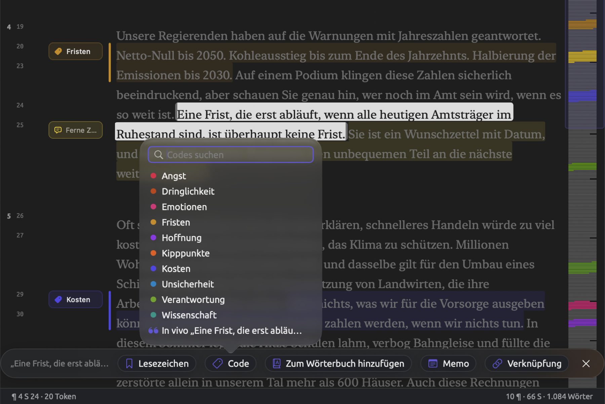
Ihre Textstelle hat jetzt die Farbe von „Fristen“. Außerdem erscheint links neben der Textstelle ein Balken in derselben Farbe. Sie können in der Liste, die noch geöffnet ist, weiter die verfügbaren Codes durchsehen, der Textstelle einen zweiten Code zuweisen oder die Liste mit der Esc-Taste schließen. Enthält das Codebuch viele Codes, tippen Sie einfach den Anfang eines Codenamens ein, um den gewünschten Code zu finden. Wenn Sie einen Namen eingeben, zu dem es noch keinen Code gibt, bietet die Liste die Option Code „…“ hinzufügen an, mit der Sie den Code in einem Schritt anlegen und zuweisen.
Ein Klick auf die Nummer neben einem Absatz wählt den gesamten Absatz aus, ohne dass Sie den Text von Hand auswählen müssen. Dokument ▸ Code (⇧⌘C) öffnet dieselbe Liste der Codes. Bearbeiten ▸ Code anwenden widerrufen (⌘Z) nimmt die letzte Codezuweisung zurück, ganz gleich, welcher Textstelle sie galt. Um einen Code später wieder zu entfernen, wählen Sie die Textstelle erneut aus; in der Liste haben die bereits zugewiesenen Codes dann ein Häkchen. Wenn Sie ein Häkchen entfernen, verliert die Textstelle diesen Code.
Kodieren Sie in jedem Text noch einige weitere Textstellen, denn die folgenden Beispiele brauchen Kodierungen zum Zählen und Visualisieren. Kodieren erklärt ausführlicher, wie Memos, Verknüpfungen und Lesezeichen funktionieren. Dort wird auch das automatische Kodieren behandelt, mit dem Sie mehrere Textstellen auf einmal kodieren.
Aktivisten und Skeptiker vergleichen
Die Code-Matrix ist eine Tabelle. Sie enthält eine Spalte für jedes Dokument und eine Zeile für jeden Code, den Sie angelegt und verwendet haben. Jede Zelle der Matrix gibt an, wie viele Textstellen im Dokument ihrer Spalte den Code ihrer Zeile tragen. Wenn Sie die Code-Matrix nach einem Attribut gruppieren, wird aus der Matrix ein Vergleich zwischen Gruppen von Dokumenten.
- Klicken Sie unter Projekt auf Code-Matrix.
- Wählen Sie im Menü, das Dokumente zeigt, den Eintrag Attribut.
- Wählen Sie im Menü, das daneben erscheint, „Haltung“.
- Klicken Sie in der Reihe von Schaltflächen darunter auf Dokumente.
- Klicken Sie im Umschalter daneben auf %.
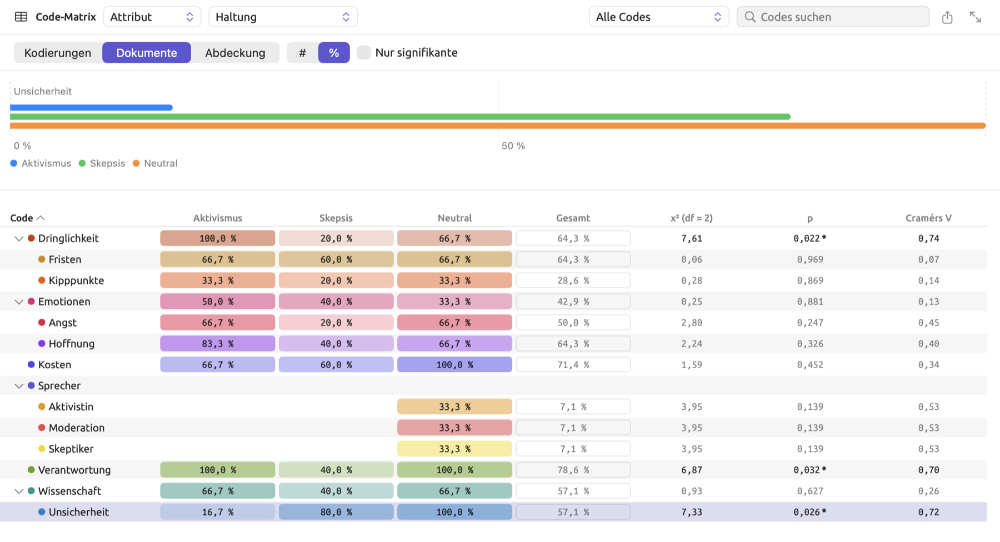
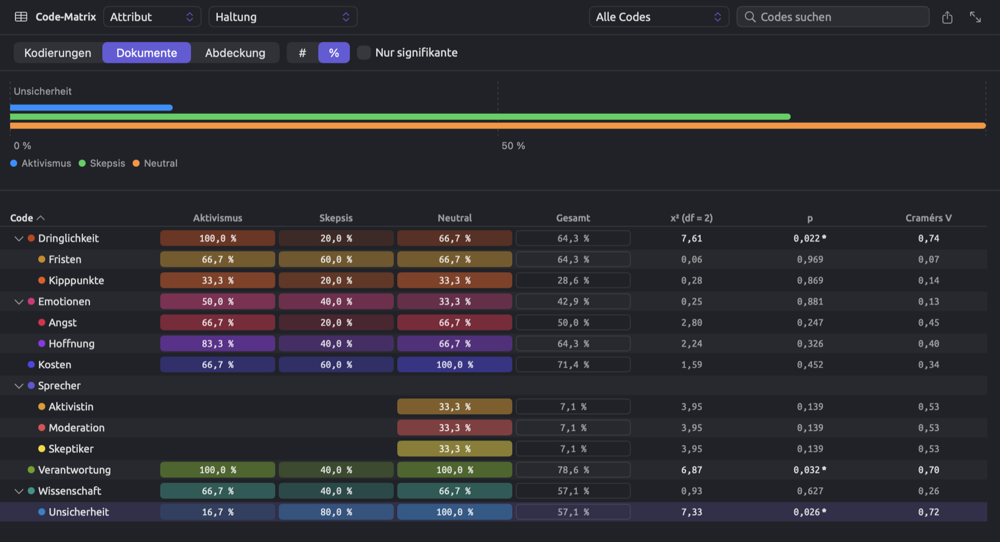
Mit % gibt jede Zelle den Prozentsatz der Dokumente einer Gruppe an, in denen ein Code mindestens einmal vorkommt. Wenn Sie in der Tabelle einen Code auswählen, zeigt ein Balkendiagramm über der Tabelle dieselben Werte für jede Gruppe. Im Projekt „Klimadebatte“ kommt der Code „Unsicherheit“ nur in einem der sechs Texte der Aktivisten vor; in der Zelle der Aktivisten steht deshalb 16,7 %. Von den fünf Texten der Skeptiker enthalten vier mindestens eine Textstelle mit dem Code „Unsicherheit“; in der Zelle der Skeptiker steht deshalb 80,0 %. Beachten Sie außerdem, dass die Tabelle im Beispielprojekt „Klimadebatte“ eine Spalte „Neutral“ hat, weil das Projekt Dokumente mit einer neutralen Haltung zum Klimawandel enthält. Das sind der Hitzebericht, der Nachrichtenartikel und die Radiodebatte.
Kodierungen gibt die Zahl der kodierten Textstellen an, Abdeckung dagegen, wie viel des Textes, gemessen in Zeichen, mit einem Code annotiert ist. Welche Messgröße Sie auch wählen, die letzten Spalten der Tabelle testen die Gruppen gegeneinander. Jeder Test prüft, ob der Zufall allein den Unterschied zwischen den Gruppen im Anteil der Dokumente mit dem jeweiligen Code erklären könnte. Das aktuelle Projekt umfasst elf Dokumente in zwei Gruppen, „Aktivismus“ und „Skepsis“. Bei zwei Gruppen im Vergleich testet die Tabelle sie mit dem exakten Fisher-Test gegeneinander und gibt einen p-Wert an (p (Fisher)). Das Beispielprojekt „Klimadebatte“ hat dagegen drei Gruppen. Deshalb prüft die Tabelle die Unterschiede dort mit dem Chi-Quadrat-Test und gibt eine Prüfgröße (χ² (df = 2)) und die zugehörige Wahrscheinlichkeit (p) an.
Nehmen Sie an, die Haltung mache überhaupt keinen Unterschied. Dann gibt der p-Wert eines Codes die Wahrscheinlichkeit an, den beobachteten Unterschied oder einen größeren allein durch Zufall zu finden, also ohne jeden echten Unterschied zwischen den Haltungen. Liegt der p-Wert unter 0,05, bringt der Zufall allein einen solchen Unterschied seltener als einmal in zwanzig Versuchen hervor. Signifikante Ergebnisse erscheinen deshalb in dunkleren Farben und mit einem Sternchen (*) neben dem p-Wert. Wenn Nur signifikante aktiviert ist, behält die Tabelle nur die Codes mit signifikanten Unterschieden. Die Stärke dieser Unterschiede misst Cramérs V auf einer Skala von 0 bis 1 (kein Unterschied bis größtmöglicher Unterschied). Betrachten Sie die dunkleren Testwerte als Anlass, die zugehörigen Textstellen genauer zu lesen.
Code-Statistik finden Sie in der Seitenleiste direkt über Code-Matrix. Jede Zeile der Tabelle steht für einen Code, den Sie verwendet haben, und zeigt, wie viele Textstellen und Dokumente dieser Code abdeckt und welchen Anteil an allen Zeichen er ausmacht. Kapitel 13, Codes auswerten behandelt beide Ansichten genauer, mit einem Beispiel für die Tests.
Ein Wort skizzieren
Eine Wortskizze zeigt, mit welchen anderen Wörtern sich ein bestimmtes Wort grammatisch verbindet. Diese Wörter sind nach Relationen geordnet. Eine Relation ist die grammatische Verbindung zwischen den beiden Wörtern. Alle Relationen sind in Kapitel 12, Wortskizze beschrieben. Die Verben, deren Objekt ein bestimmtes Wort ist, bilden zum Beispiel eine Relation. Die Adjektive, die dieses Wort beschreiben, bilden eine andere.
- Klicken Sie unter Projekt auf Wortskizze.
- Geben Sie in das Feld Wort
Klimaein und drücken Sie den Zeilenschalter. - Falls ein anderer Modus gewählt ist, klicken Sie in der Leiste oben im Tab auf Grammatik.
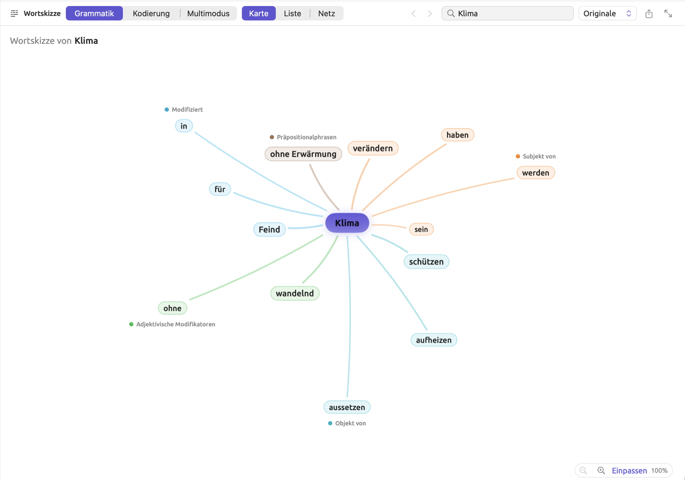
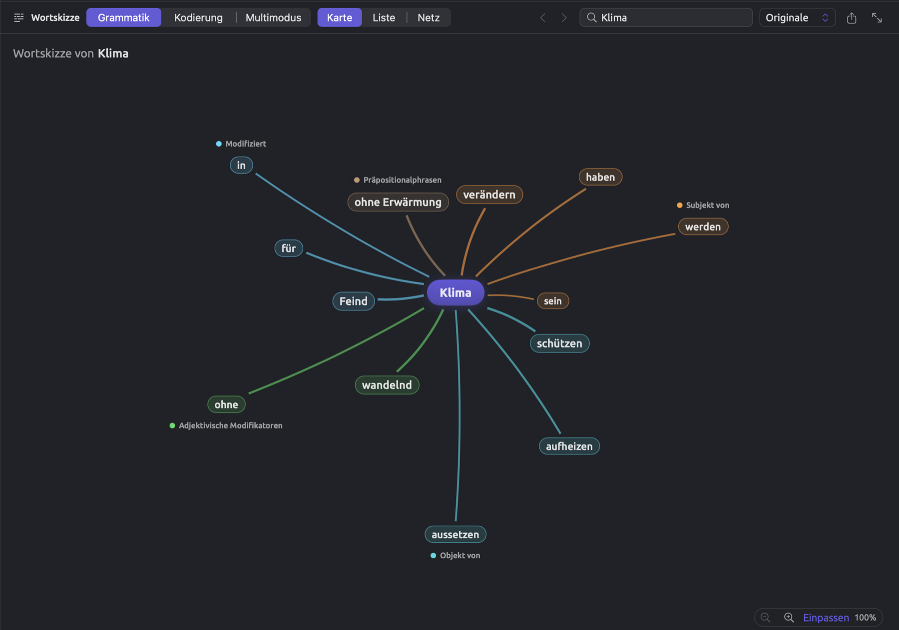
In der Karte steht Klima in der Mitte, und seine Partner sind nach ihren Relationen angeordnet. Jede Farbe steht für eine Art von Relation. Verändern steht unter Subjekt von, weil Klima in „Das Klima verändert sich“ das Subjekt ist. Schützen ist eines der Wörter unter Objekt von, wie in „das Klima zu schützen“. Innerhalb einer Relation ist die Schrift eines Partners umso größer, je stärker die Verbindung ist.
Die Stärke der Verbindungen wird mit dem logDice-Wert gemessen, dessen Berechnung der Abschnitt logDice erklärt. Der logDice-Wert gibt an, welcher Anteil der Verwendung der beiden Wörter auf ihr gemeinsames Vorkommen als Paar entfällt. Sie können sich den Wert als mathematischen Ausdruck für Kollokationen vorstellen. Der logDice-Wert reicht bis 14, dem Höchstwert für Wörter, die ausschließlich gemeinsam vorkommen. Jeder Punkt unter 14 halbiert diesen Anteil. Wenn Sie den Mauszeiger auf einen Partner halten, sehen Sie den logDice-Wert neben f; f steht hier für Frequenz, also Häufigkeit. Dieser Wert gibt an, wie oft die beiden Wörter zusammen vorkamen.
Sie können die Skizze jedes Partners aufrufen, auch die von schützen, indem Sie auf das Wort klicken. Um zu Klima zurückzukehren, klicken Sie in der Zeile über der Skizze darauf oder drücken ⌘[. Um die Sätze zu einem bestimmten Partner zu sehen, klicken Sie über der Skizze auf Liste und wählen dann die Zeile mit dem gewünschten Partner aus. LemmaLoom springt direkt zum ersten Satz, der die beiden Wörter verbindet. Klicken Sie auf den Tab Wortskizze, um zurückzukehren, und dann erneut auf dieselbe Zeile, um weitere Sätze mit beiden Wörtern anzusehen.
Die Schlüsselwörter der Aktivisten finden
Manche Wörter kommen in einem Set deutlich häufiger vor als in einem anderen. Andere Wörter kommen deutlich seltener vor. Eine Schlüsselwortliste hebt den Unterschied in den Häufigkeiten in beide Richtungen hervor. Vergleichen Sie die Schlüsselwörter des Sets „Aktivisten“ mit denen des Sets „Skeptiker“.
- Klicken Sie in der Seitenleiste unter Sets auf „Aktivisten“. Das Set öffnet sich in einem Tab.
- Klicken Sie in der Reihe von Schaltflächen oben im Tab auf Abfragen. In einem schmalen Fenster ist die Reihe ein Menü. Wählen Sie darin Abfragen.
- Klicken Sie in der Spalte links unter Vorlagen auf Schlüsselwörter.
- Rechts neben der Spalte liegt der Abfrageeditor. Er besteht aus Kästen, den Bedingungen. Kapitel 15, Eine Abfrage erstellen beschreibt beides. Stellen Sie in der Bedingung Anzeigen das Menü, das Rest des Projekts zeigt, auf Set.
- Wählen Sie im Menü, das darunter erscheint, „Skeptiker“.
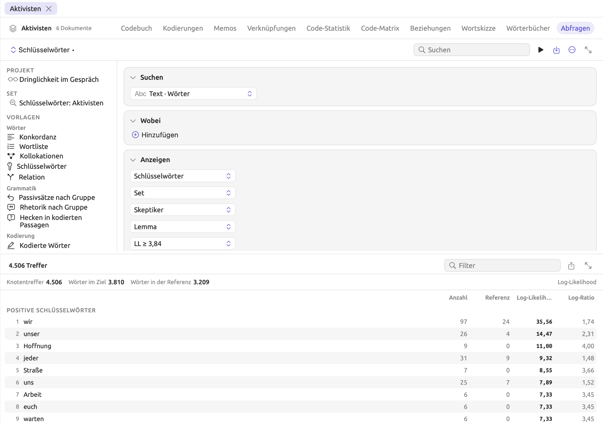
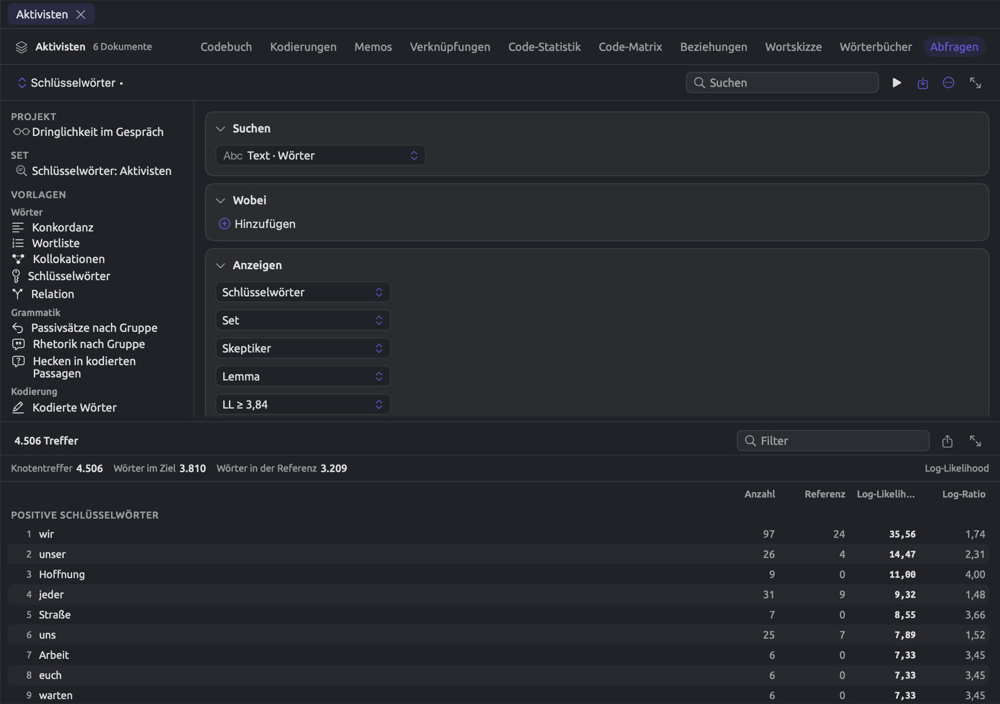
Lassen Sie das Menü, das Lemma zeigt, unverändert, damit kostet und kosten zu kosten werden. Lassen Sie auch das Menü, das LL ≥ 3,84 zeigt, unverändert. Die Abkürzung LL steht für den Wert Log-Likelihood. Allein durch Zufall tritt ein Wert von 3,84 oder mehr nur etwa einmal in zwanzig Versuchen auf. Wörter mit einem niedrigeren Wert erscheinen nicht in der Ergebnisliste.
Das Ergebnis erscheint unter dem Editor und wird aktualisiert, während Sie die Einstellungen ändern. In einem größeren Projekt führen Sie die Abfrage selbst aus, indem Sie auf das Dreieck über dem Editor klicken oder ⌘R drücken.
Positive Schlüsselwörter listet Wörter auf, die die Aktivisten häufiger verwenden als die Skeptiker. Negative Schlüsselwörter listet die Wörter auf, die sie seltener verwenden. In diesem Vergleich ist „Aktivisten“ das Ziel und „Skeptiker“ die Referenz. Die Zeile über den Tabellen gibt an, wie viele Wörter insgesamt in jedem Set berücksichtigt wurden, bezeichnet als Wörter im Ziel und Wörter in der Referenz. In der Tabelle steht die Anzahl eines Wortes im Set „Aktivisten“ unter Anzahl, die im Set „Skeptiker“ unter Referenz.
Beide Listen sind nach Log-Likelihood sortiert. Oben in jeder Liste stehen die Wörter, bei denen es am wenigsten wahrscheinlich ist, dass ihr Unterschied allein auf Zufall beruht. Log-Ratio gibt an, wie groß der Unterschied ist, und berücksichtigt dabei die Gesamtgröße der beiden Sets. Der Wert 1 bedeutet doppelt so häufig, 2 viermal so häufig, 3 achtmal so häufig und so weiter; mit jedem weiteren Schritt verdoppelt sich der Faktor. Bei negativen Schlüsselwörtern liegt der Wert unter null, und −1 bedeutet halb so häufig. Schlüsselwörter in Kapitel 16, Abfrageergebnisse und Statistik berechnet beide Werte Schritt für Schritt.
Schlüsselwortlisten zeigen Ihnen Wörter, die ein Set auszeichnen; warum diese Wörter hervorstechen, verraten sie Ihnen jedoch nicht. Untersuchen Sie die Kontexte der aufgelisteten Wörter in den Textstellen.
So sichern Sie die Schlüsselwortabfrage:
- Klicken Sie in der Leiste über dem Editor auf die Schaltfläche mit einem Quadrat und einem Pfeil, der hineinzeigt. Ihr Tooltip lautet Sichern.
- Wählen Sie Sichern.
- Ersetzen Sie im Dialog Abfrage sichern den Text unter Name durch
Schlüsselwörter: Aktivisten. Lassen Sie Verfügbar in auf Set stehen. - Klicken Sie auf Sichern.


Die gesicherte Abfrage erscheint oben in der linken Spalte unter Set, wann immer Sie die Abfragen des Sets „Aktivisten“ öffnen. Ein Klick auf diesen Eintrag stellt die Schlüsselwortliste wieder her, die Sie vorher gesehen haben. Im Beispielprojekt steht hier bereits eine gesicherte Abfrage.
Eine Tabelle exportieren
Schlüsselwortlisten lassen sich als CSV-Dateien (.csv) mit kommagetrennten Werten exportieren und in Tabellenkalkulationen weiterverwenden.
- Klicken Sie in der Leiste über den Ergebnissen auf die Schaltfläche zum Exportieren, ein Quadrat mit einem Pfeil nach oben. Ihr Tooltip lautet Exportieren.
- Wählen Sie CSV.
- Wählen Sie einen Ordner und klicken Sie auf Sichern.


Jede Zeile enthält ein Schlüsselwort zusammen mit seinen Häufigkeiten, seinen Werten und der Angabe, ob es als positiv oder negativ eingestuft wurde. Das Format ist CSV (Comma-Separated Values, also kommagetrennte Werte), ein einfaches textbasiertes Tabellenformat, das viele Anwendungen unterstützen, darunter Tabellenkalkulationen und Statistikprogramme. Die übrigen Einträge unter Exportieren im selben Menü exportieren das Ergebnis als Bild (PNG und PDF) oder als Markdown-Datei (das Format Markdown verbindet die Ergebnisdatei mit Angaben zur verwendeten Abfrage) oder kopieren es in die Zwischenablage (Kopieren).
Die meisten Tabellen und Diagramme bieten wie diese eine Möglichkeit zum Exportieren. Tabellen und Diagramme exportieren in Kapitel 22, Austausch und Export beschreibt genauer, was jedes Exportmenü tut und wo es erscheint.
Um die Konkordanz zu einem bestimmten Schlüsselwort anzusehen, klicken Sie in der linken Spalte unter Vorlagen auf Konkordanz. Mit der Konkordanz können Sie jedes Vorkommen des Wortes zusammen mit seinem unmittelbaren Kontext im umgebenden Text durchsehen. Mehr dazu finden Sie unter Konkordanz in Kapitel 16, Abfrageergebnisse und Statistik; wie Sie das Wort wählen, erklärt Vorlagen in Kapitel 17, Abfragemuster und Erkundung.
Wie es weitergeht
Hilfe ▸ Glossar öffnet ein Glossarfenster mit kurzen Erklärungen zu den Begriffen von LemmaLoom. Sie können es offen lassen, während Sie mit Ihren Dokumenten arbeiten, um Abkürzungen oder Fachbegriffe, die Sie nicht kennen, schnell nachzuschlagen.
| Ziel | Kapitel |
|---|---|
| Jeden Teil des Fensters kennenlernen und erfahren, wo Ihre Arbeit gespeichert wird | Erste Schritte |
| PDF-Dateien, Webseiten und Aufnahmen importieren | Material importieren |
| Text in der Leseansicht finden, auswählen und bearbeiten | Lesen und Bearbeiten |
| Nachsehen, was jede Lens annotiert | Lenses |
| Memos schreiben, Textstellen verknüpfen und automatisch kodieren | Kodieren |
| Ein Projekt nach Haltung, Medium oder Datum aufteilen | Sets, Gruppen, Tags und Attribute |
| Einen Text übersetzen und neben dem Original lesen | Übersetzungen und geteilte Ansicht |
| Codes zählen, in Diagrammen darstellen und testen | Codes auswerten |
| Die grammatischen Partner eines Wortes untersuchen | Wortskizze und Skizzenraum |
| Nach Wörtern, Wendungen und grammatischen Mustern suchen | Eine Abfrage erstellen und Abfragemuster und Erkundung |
| Einen Wert oder einen Test verstehen, bevor Sie darüber berichten | Abfrageergebnisse und Statistik und Statistik im Überblick |
| Material aus mehreren Projekten auswerten | Projektübergreifend arbeiten in Kapitel 3, Projekte und Dokumente |
| Wortlisten anlegen, etwa für Heckenausdrücke, und ihre Wörter zählen | Wörterbücher |
| Ein Projekt weitergeben oder auf einen anderen Mac übertragen | Austausch und Export |
| Einen Tastaturkurzbefehl finden | Tastaturkurzbefehle |